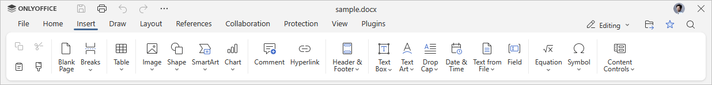

Umetanje teksta iz datoteke
U Document Editor-u možete umetnuti tekst iz datoteke uz zadržavanje formatiranja.
-
Pređite na karticu Insert na gornjoj traci sa alatkama.

- Kliknite na ikonu Text from File.
-
Izaberite jednu od sledećih opcija:
- Text from the local file – izaberite datoteku sa vašeg hard diska da biste je umetnuli u dokument.
- Text from the URL file – unesite odgovarajući URL da biste umetnuli tekst sa njega. Imajte u vidu da datoteka mora biti javno dostupna kako bi proces pravilno funkcionisao.
- Text from the storage file – izaberite datoteku sa vašeg ONLYOFFICE portala da biste umetnuli njen sadržaj.